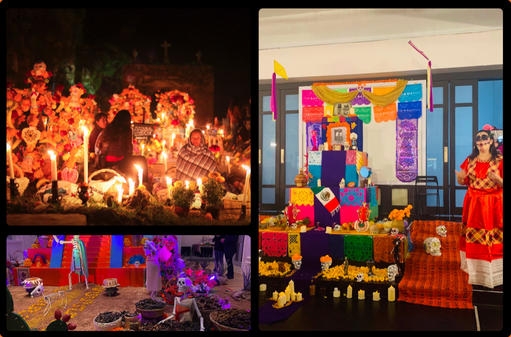
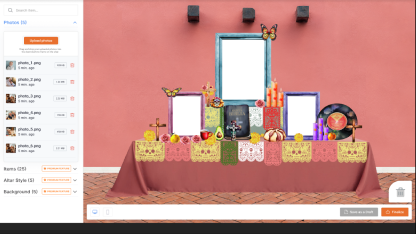
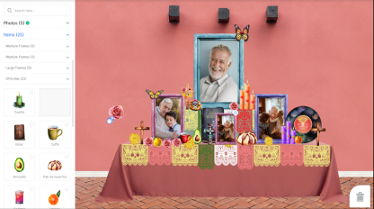
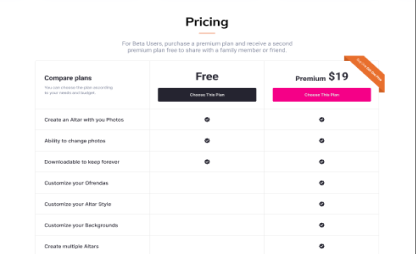
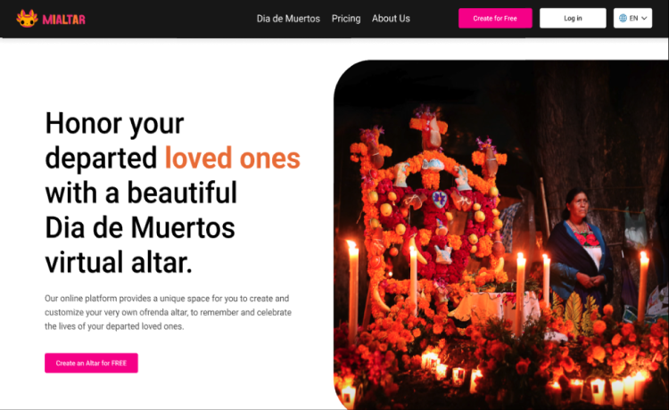
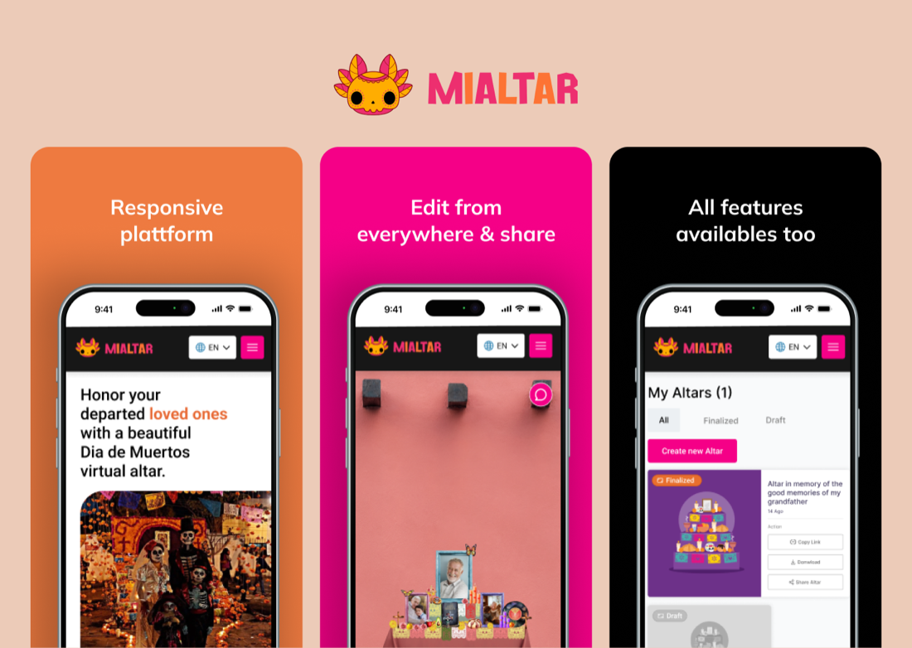

00 · Executive summary12 weeks
MiAltar, a startup that turns Día de Muertos into a digital experience: anyone, anywhere, can build a virtual altar to honor their loved ones and share it.
12wk
From research to tested platform
5+
Discovery interviews, diverse nationalities
15
Users in usability testing
14/15
Used the altar editor without issues
Problem
Many people lack the resources or space for a traditional altar, or live outside Mexico.
Approach
Design thinking over twelve weeks: interviews, empathy maps, IA, prototypes, and usability studies.
Outcome
A low-cost responsive platform with a drag-and-drop altar editor, free and premium plans, and sharing.
Design strategy
- Business goal: the leading global platform for a meaningful, accessible digital Día de Muertos.
- Target: diverse ages and backgrounds, without space or resources, or far from Mexico.
- Cross-channel: web on desktop and mobile.
- Basic tasks: create a profile, design an altar, and learn about the tradition.
Timeline · twelve weeksFig. A
W1–3W4–6W7–9W10–12
Empathize
Define
Ideate
Prototype
Test
Step 01 / 05Weeks 1–2
01
Empathize
GoalUnderstand what people know, feel, and expect from a digital Día de Muertos.
Interview sessions · 5+ participants
V1 · Familiarity→What do they know about Día de Muertos?
V2 · Digital experience→Have they used digital platforms for cultural events?
V3 · Expectations→How could a platform enhance the celebration? What's essential?
Features defined
Customizable altar editorElement libraryEducational resourcesSocial interactionResponsive platformPayment section

Step 02 / 05Weeks 3–4
02
Define
GoalDesign for those who want to keep the tradition, and those discovering it.
AR
Ana ReyesStudent, Mexican roots
- Thinks
- Wants to understand the tradition and keep her family's customs alive.
- Feels
- Curious about her roots, responsible, a bit overwhelmed by college.
- Does
- Researches online, creates her altar, and shares it on social media.
OJ
Oscar JhonsonMarried into the tradition
- Thinks
- Wants to be respectful and authentic; worries about not understanding.
- Feels
- Curious and open, but insecure about his knowledge of the culture.
- Does
- Creates an altar with his wife and learns alongside her.
USER STORY 01
I want to explore and learn about Día de Muertos to immerse myself in it, despite my location.
USER STORY 02
I want reliable academic resources to deepen my understanding of its cultural aspects.
USER STORY 03
I want to create my own digital altar to honor my loved ones, in an easy way.
Step 03 / 05Weeks 5–7
03
Ideate
GoalA short path from sign-up to a finished altar you can share.
Information architectureFig. C
Open MiAltar→Sign up / login · Google, Apple, Facebook, email→Home
HomeHow it works · next featuresPricing · testimonials · contact
My profileAccount · preferencesPayment: method, card
My altarsCreate · all · completed · draftsBasic or premium
CustomizeStyle · background · elementsShare · download
Style#F50087 secondary#E86F2D accent#EEA002 additionalInter
Step 04 / 05Weeks 8–10
04
Prototype
GoalA consistent, accessible design that respects the colors of the tradition.
EDITOR
Drag & drop altar
Upload photos of loved ones and arrange frames, elements, and backgrounds.

LIBRARY
Graphic resources
Typical offerings, candles, and flowers, with the premium plan.

PLANS
Free and premium
Plans for different needs and budgets, with several payment methods.

ACCESS
Diverse access
Login with Google, Apple, Facebook, or email, in English and Spanish.

Step 05 / 05Weeks 11–12
05
Test
GoalFind recurring patterns and prioritize them by MVP needs.
Findings · 15 usersFig. D
HIGH
Login
Explore SMS verification linked to the phone number.
HIGH
Designing the altar
A more diverse catalog with different graphic styles.
MEDIUM
Sharing
Add Telegram and other social platforms.
LOW
Collaboration
Several people building one altar together.
06 · ResultsResponsive platform
06
A tradition, without borders
OutcomeA platform to create, share, and download altars from any device, with a prioritized roadmap shared with stakeholders.
EASE
93%
Used the altar editor without issues.
SHARING
80%
Shared their altar during testing.
REACH
Any device
Edit from everywhere, with every feature on mobile too.
Evidence
Home Editor Mobile Pricing

Next case · 17 / 21CitiBanamex
→